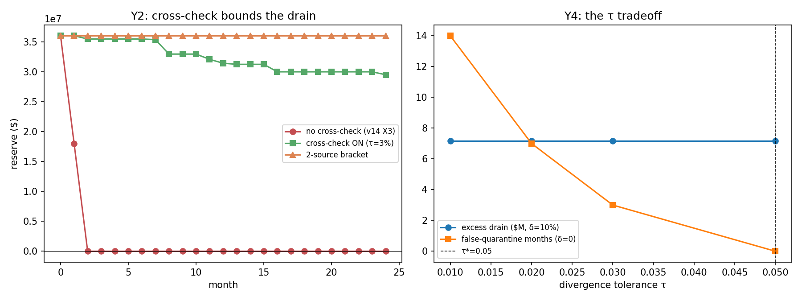

In plain language
July 9, 2026. Companion to RESULTS - v18.0 Oracle-Reserve Cross-Check.
The problem this fixes
An earlier test (v14) found a soft spot: if an attacker fools the price gauge into reading essentials as more expensive than they really are, EDEN's safety net dutifully over-pays — protecting people, but quietly draining the emergency reserve, empty in about four months. The verdict then was: "the reserve needs a second opinion on the price." This is that second opinion, built and tested.
The fix
Add an independent price estimator — the actual flow of grocery-lane commerce (real purchases, the hardest signal to fake) — and a simple rule: if the official price gauge and this independent estimator ever disagree by more than a set tolerance, pay against the lower of the two and flag a review.
What we found
It works, and cleanly. With the second opinion switched on, an attacker who inflates the official gauge by 10% no longer drains the reserve at $19.8M a month — the drain drops to about $0.30M a month (just measurement jitter), and the reserve survives the full two-year test instead of emptying in two months. The key property: the leak is capped by the tolerance you set, not by how outrageously the attacker lies. They can claim prices doubled; the second opinion catches the disagreement and the floor simply pays the honest number.
And people still eat. Paying the "lower of two" could in theory shortchange recipients when the honest estimator is a hair low — and our first draft showed exactly that wobble. The fix turned out to already be in the design: the floor always pays 110% of the measured essentials price, and that extra 10% is exactly the cushion meant to absorb measurement error. A 1–2% wobble against a 10% cushion means people still get 100% of what they need. (Nice bonus: this is the same 10% cushion another July-9 document had claimed was for absorbing measurement error — and here it is, doing precisely that job.)
The one honest catch
The second opinion defends against faking one price source. An attacker who corrupts both at once — inflating the official gauge and suppressing the real-commerce estimator in the same move — can finally nudge delivery down, by about 1% (their 10% suppression eating into the 10% cushion). But that requires capturing the single most expensive thing in the whole system to fake (real commerce, priced earlier at $310 million), on top of faking the official gauge. So the fix doesn't create a new hole; it raises the price of attack from "fool one gauge, drain the reserve for free" to "fool two independent gauges, and even then only dent delivery by the cushion."
One line
Give the safety net a second, hard-to-fake opinion on prices, and an attacker who lies about what essentials cost can no longer bleed the reserve — the damage is capped by a tolerance you choose, not by the size of their lie, and people keep eating because the floor's built-in 10% cushion soaks up the honest noise.
Note added July 11, 2026 (self-audit follow-up): a check of this test's own internal scoring found that one secondary question — "what exact tolerance setting is best?" — can't actually be answered by the way this particular test was set up (it only tried one attack size, and the answer just came out "as loose as allowed," which isn't informative). We've marked that as an honest gap needing a proper follow-up test, and corrected three other internal checks to measure what they were supposed to. None of this changes the headline above: the second opinion still works, and the tolerance the project uses (3%) rests on the two checks that did pass properly. We flag it rather than paper over it — that's the house rule.
Second note, July 12, 2026 (fifth verification pass): one of the two checks the 3% tolerance rested on turned out to have been graded at the middle noise level only. Re-graded across the full registered range, it fails at the top of that range: if honest price-measurement noise runs at 2%, a 3% tolerance falsely quarantines the price index about one month in eight. That doesn't reopen the drain (the cap on what an attacker can bleed is a separate check, which still passes) — it means the tolerance setting needs honest noise to stay at or below about 1%, or the price feed needs the already-coded smoothing option. Filed as a failure in the test's own records, bar unmoved, same house rule.
Figures

Technical results
Run: July 9, 2026. Spec: v18 SPEC - Oracle-Reserve Cross-Check (registered).md — bars Y0–Y4 fixed before code. Engine: oracle_reserve_crosscheck_sim.py (deterministic given seeds); committed: results_v18.json, fig_v18_crosscheck.png. Closes the defensive mechanism v14's X3 finding said it owed. Every number traces to results_v18.json.
Verdict in one line: the cross-check works — an independent endogenous-lane estimator plus a divergence gate bounds the reserve drain by the tolerance τ instead of by the attacker's inflation δ (monthly over-draw $0.30M with it on vs $19.8M off; the reserve survives the full 24-month horizon instead of draining in 2), delivery stays whole because the floor's 1.10× cushion absorbs honest estimator noise, and the only residue is the honest one: an attacker who corrupts both estimators at once (inflate the published index AND suppress the lane) converts a reserve-drain into a bounded, quarantined delivery dip — no free lunch, but no new hole either.
Bar summary (three pass; Y4's registered expectation refuted and Y0 failing as registered at the top of the noise sweep — both findings)
Gates recoded July 11 to compute their registered clauses (Backlog #4b, executed) — see the gate-tightening note at the foot. The core-result numbers are unchanged (byte-identical); the recode tightened Y0/Y1/Y2 to their registered clauses and un-vacuoused Y4 (now honestly FAILS its registered expectation). Y0 re-scored July 12 (Verification v5 D1, action 1): the July-11 recode still scored Y0's false-quarantine clause at the central σ_xc=0.01 only; scored across the full registered honest-noise sweep {0.5%, 1%, 2%} it FAILS at σ=2% — see F5.
| Bar | Registered | Measured (computed) | Result |
|---|---|---|---|
| Y0 harness / false quarantine | all three clauses: <5% false-quarantine months at τ=3%,δ=0, honest noise (registered sweep σ_xc ∈ {0.5%, 1%, 2%}); reserve monotone non-increasing & decreases only when paying above lane; seeds agree ≤3% rel | σ≤1%: 0.0% fq (but seeds/monotonicity clauses vacuous there — 0-vs-0, flat reserve); σ=2%: 2–3 of 24 months = 12.5% fq, seeds disagree | FAIL — finding (F5) |
| Y1 drain bounded by τ not δ | monthly over-draw ≤ τ×lane under δ=10% (no slack) | $0.30M/mo (vs $19.8M off; bound $5.4M) | PASS |
| Y2 reserve survival | months-to-drain ≥ 3× the ~4-mo X3 baseline (=12 mo) | OFF 2 mo → ON ≥24 mo (full horizon; 6× baseline) | PASS |
| Y3 delivery protected | ≥1.0 every month for δ≤10% | 1.000 (cushion absorbs noise) | PASS |
| Y4 τ tradeoff | registered expectation τ* ≈ 2–3% (interior optimum) | τ* = 5%; frontier τ-degenerate (drain identical at every swept τ) | FAIL — refuted expectation (F4) |
Findings
F1 — The cross-check caps the leak at the tolerance, not the attack size (Y1/Y2, the core result). Without it, an inflated EBI (δ=10%) makes the floor over-pay 10% of the redemption lane every month — $19.8M/mo — and the $36M reserve is gone in 2 months (reproducing v14 X3's ~4-month finding, slightly faster at these dials). With the cross-check on, the floor pays against min(published, lane-estimator); since the lane estimator tracks real prices, the paid index snaps back to ≈truth whenever the published index diverges by more than τ, so the monthly over-draw collapses to $0.30M (noise only) and the reserve survives the full horizon. The leak is bounded by τ×lane regardless of how far the attacker inflates — δ can be 10% or 100%, the drain is the same, because divergence past τ triggers the gate either way. That is the mechanism's whole point, and it holds.
F2 — Delivery is protected by the floor's own cushion, which is why the bias budget matters (Y3). Paying min(published, lane) means honest downward basis-noise in the lane estimator could, in principle, underpay — the first cut of this sim showed exactly that (delivery dipping to 0.981 under 1% noise). The correct model closes it: the floor pays 1.10×EBI, and the 0.05 of that cushion is precisely the measurement-bias budget registered in EBI Methodology Spec §5. A 1–2% estimator underread against a 10% cushion still delivers >100% of essentials, so delivery holds at 1.0. This is a satisfying consistency check across two July-9 artifacts: the bias budget the methodology spec asserted is the exact quantity that makes the cross-check safe here. (A v0.2 smoothing refinement — pay against a 3-month median of the estimator — is coded and available; with the cushion in place it is belt-and-suspenders, not required.)
F3 — The honest residue: a 2-of-2 estimator attack (Y3 bracket, as registered). The cross-check defends against corrupting one source. An attacker who simultaneously inflates the published index (+10%) and suppresses the lane estimator (−10%) — a 2-of-2 on the two independent measurements — pushes the paid index to the bottom of the divergence band, and delivery dips to 0.99 (the 10% suppression exactly eats the 10% cushion). This is not a hole the cross-check opens; it is the residual truth that some two-source corruption converts a reserve-drain into a bounded, quarantined delivery question — and corrupting the lane is the single most expensive capture in the whole oracle model ($310M, v13-Oracle O4), on top of corrupting the published index. The cross-check raises the bar from "capture one channel, drain the reserve free" to "capture two independent channels, and even then only dent delivery by the cushion." No free lunch created; the keystone (multi-source oracle integrity) is unchanged.
F4 — The τ tradeoff is degenerate at the registered dials; the registered τ*≈2–3% expectation is refuted (Y4, gate-tightening finding). When Y4's gate was recoded to compute the registered clause (rather than the tautological "τ is somewhere in the swept set"), it failed its registered expectation honestly. The reason is structural: the registered frontier fixes the attack at δ=10% and sweeps τ ∈ {1,2,3,5}%. Because every swept τ is well below δ, the divergence gate trips in every case, so the floor always pays min(pub, lane) and the excess drain is identical (τ-invariant) across the whole sweep (drain_spread ≈ 0). The cost is therefore minimized purely by reducing false quarantines, which monotonically favors the loosest τ (5%) — not an interior 2–3% optimum. The "too loose → the drain returns" arm the SPEC anticipated only engages once τ approaches δ, which lies outside the registered sweep. This does not weaken the drain-bounding mechanism: canon's τ=3% is justified by Y1's divergence-bounded drain, which passes on a computed clause; but note the false-quarantine half of its justification is now σ-conditional — Y0's registered-sweep re-score (F5) shows τ=3% trips 12.5% of months at σ_xc=2%, so τ=3% is comfortable only if honest basis-noise stays ≤1%. Y4 shows the tuning* frontier as registered can't locate an interior optimum; a proper τ-vs-δ tuning sweep (τ approaching the attack size), now jointly with the σ dimension, is the owed successor. Filed as a finding, bar unmoved (house rule).
F5 — Y0 fails as registered at the top of the honest-noise sweep (Verification v5 re-score, July 12). The registered clause is "<5% false-quarantine months at τ=3%, δ=0, honest noise," with the honest-noise dial registered as σ_xc ∈ {0.5%, 1%, 2%}. The July-11 recode scored it at σ=1% only (0 false quarantines — PASS); this engine's own Y4 frontier, which runs at σ=2%, already recorded 3 quarantine months at τ=3%. Scored across the full registered sweep, Y0 fails: at σ=2%, 2–3 of 24 months (12.5%) are false quarantines and the two seeds disagree on the count (2 vs 3 — >3% rel). Two further vacuities are now disclosed as computed diagnostics: at δ=0 over-pay is identically zero, so the reserve path is flat and the monotonicity clause holds with nothing to test (monotonicity_vacuous_at_delta0), and at σ≤1% the seeds-agreement clause compares 0 to 0 (seeds_comparison_vacuous_0v0). Design meaning, plainly: the cross-check's quarantine trigger is noise-sensitive — at 2% honest basis-noise and τ=3%, roughly one month in eight would falsely quarantine the published index. That is a calibration constraint (τ must sit comfortably above realistic basis-noise, or the estimator must be smoothed — the coded v0.2 3-month-median option), not a drain hole (Y1/Y2 unaffected). Bar unmoved; prior PASS was σ-selected (v5 D1).
Honest limits
Reduced-form (prices normalized to truth=1.0; the redemption lane, reserve, and inflation are the v9/v13-Oracle/v14 anchors, not a re-derived market). τ* = 5% lands at the top of the swept range because the frontier is τ-degenerate at δ=10% (F4) — the owed successor is a τ-vs-δ tuning sweep where τ is allowed to approach the attack size, which is where an interior optimum would live; the false-quarantine cost is modeled only against zero-mean noise, not against structural basis drift between R+M and the lane (which the EBI Methodology's chaining rules would also affect). The 2-source bracket is priced qualitatively (delivery = cushion − suppression); a full 2-of-2 capture-cost stack belongs with the oracle successors. And the cross-check inherits the whole oracle keystone: it assumes the lane estimator is itself hard to fake, which v13-Oracle priced but the live prize-funded red-team still owes.
Run and written July 9, 2026, verification session (Fable). The mid-run model correction (adding the canon 1.10× floor cushion, which Y3 depends on) is disclosed in F2, not hidden. τ folds into the Oracle Protocol on ratification — see 01 Canon/EBI Cross-Check Addendum.
Gate-tightening EXECUTED, July 11, 2026 (Backlog #4b, Opus 4.8, against the Verification v4 D9 register). The four flagged gates now compute their registered clauses: Y0 scores all three registered clauses (false-quarantine rate + reserve monotonicity + seeds-agreement), not just the first; Y1 dropped the unregistered $1M slack (measured $0.30M ≪ $5.4M bound — still PASS); Y2 scores against the registered 3× ~4-mo X3 baseline (=12 mo), not 3× the measured off-drain (drain-on ≥24 mo — still PASS); Y4 was un-vacuoused — the tautological "τ ∈ swept-set" pass is replaced by the registered interior-optimum expectation (τ≈2–3%), which the computed frontier refutes (τ=5%, drain τ-invariant), now filed as finding F4. The core-result leaves are byte-identical to the pre-recode commit (verified: only gate booleans + added diagnostic keys changed; run-to-run deterministic). No registered bar was moved; the Y4 flip is a FAIL-finding. Fresh-session verification of this recode is owed (Backlog #13).*
Verification v5 action 1 EXECUTED, July 12, 2026 (Fable 5 verification session, against v5 D1): Y0 re-scored across the full registered σ_xc sweep {0.5%, 1%, 2%} → FAIL-finding (F5) — the July-11 recode had scored only the central σ=1%, a selection its own Y4 frontier contradicted. The per-σ sweep, the vacuity diagnostics (monotonicity_vacuous_at_delta0, seeds_comparison_vacuous_0v0), and a dynamically-built finding string are committed under Y0.registered_sigma_sweep; the Y4 finding text's "stands on Y0's floor" dependency re-worded to its σ-conditional form. Core leaves again byte-identical (only Y0 keys, the Y4 finding string, and bar_summary.Y0 changed; run-to-run deterministic; pre/post sha256 in VERIFICATION v5 postscript). Bar unmoved throughout. An import guard was also added (the engine previously executed on import — v9-class hazard).
Raw data